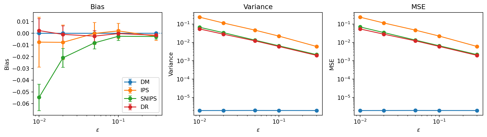
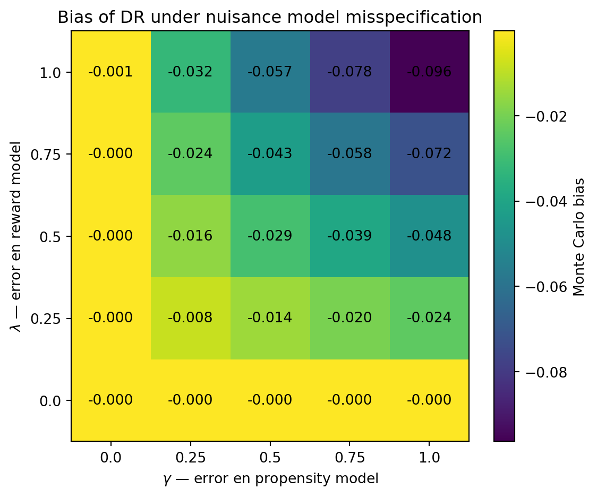

| epsilon | estimator | mean | bias | variance | mse |
|---|---|---|---|---|---|
| 0.3 | DM | 0.660016 | 1.6e-05 | 2e-06 | 2e-06 |
| 0.3 | IPS | 0.657402 | -0.002598 | 0.006 | 0.006007 |
| 0.3 | SNIPS | 0.657291 | -0.002709 | 0.002164 | 0.002171 |
| 0.3 | DR | 0.658377 | -0.001623 | 0.001967 | 0.001969 |
| 0.1 | DM | 0.660003 | 3e-06 | 2e-06 | 2e-06 |
| 0.1 | IPS | 0.662038 | 0.002038 | 0.022055 | 0.022059 |
| 0.1 | SNIPS | 0.657443 | -0.002557 | 0.006545 | 0.006551 |
| 0.1 | DR | 0.659737 | -0.000263 | 0.006029 | 0.006029 |
| 0.05 | DM | 0.66 | -0 | 2e-06 | 2e-06 |
| 0.05 | IPS | 0.659912 | -8.8e-05 | 0.046347 | 0.046347 |
| 0.05 | SNIPS | 0.651849 | -0.008151 | 0.013245 | 0.013312 |
| 0.05 | DR | 0.657595 | -0.002405 | 0.01217 | 0.012175 |
| 0.02 | DM | 0.660006 | 6e-06 | 2e-06 | 2e-06 |
| 0.02 | IPS | 0.652283 | -0.007717 | 0.113588 | 0.113648 |
| 0.02 | SNIPS | 0.63911 | -0.02089 | 0.033821 | 0.034257 |
| 0.02 | DR | 0.65905 | -0.00095 | 0.027993 | 0.027994 |
| 0.01 | DM | 0.660004 | 4e-06 | 2e-06 | 2e-06 |
| 0.01 | IPS | 0.65247 | -0.00753 | 0.235888 | 0.235945 |
| 0.01 | SNIPS | 0.605422 | -0.054578 | 0.066441 | 0.06942 |
| 0.01 | DR | 0.662307 | 0.002307 | 0.053939 | 0.053944 |
Anatomía empírica de estimadores de Off-Policy Evaluation (OPE)
1 Introducción
1.1 Motivación
En muchos problemas de decisión, tenemos una política que selecciona una acción en función de la información disponible sobre cada individuo o situación. En un contextual bandit, esta información se representa mediante un contexto \(X\), a partir del cual se selecciona una acción \(A\) y posteriormente se observa una recompensa \(R\).
Una cuestión habitual consiste en evaluar una nueva política antes de desplegarla. La forma más directa de hacerlo sería ejecutarla y observar las recompensas obtenidas, pero esto puede ser costoso, lento o arriesgado. La evaluación offline de políticas (Off-Policy Evaluation, OPE) busca estimar el valor de una target policy utilizando datos recogidos previamente por otra política (Li et al. 2011; Dudík et al. 2011).
El problema aparece, por ejemplo, en sistemas de recomendación, publicidad online o experimentación adaptativa, donde pueden existir grandes cantidades de interacciones registradas pero resulta indeseable desplegar cada nueva política únicamente para conocer su rendimiento.
1.2 Planteamiento del problema
Sea \(\mathcal{X}\) el espacio de contextos y sea \(\mathcal{A}\) un espacio finito de acciones. Una política estocástica es una aplicación
\[ \pi : \mathcal{X} \to \Delta(\mathcal{A}), \]
donde \(\Delta(\mathcal{A})\) denota el conjunto de distribuciones de probabilidad sobre \(\mathcal{A}\). Para cada contexto \(x\), la cantidad \(\pi(a \mid x)\) representa por tanto la probabilidad de seleccionar la acción \(a\) bajo la política \(\pi\).
Distinguimos dos políticas. La logging policy
\[ b : \mathcal{X} \to \Delta(\mathcal{A}) \]
es la política que genera las acciones observadas en los datos, mientras que la target policy
\[ \pi : \mathcal{X} \to \Delta(\mathcal{A}) \]
es la política cuyo valor queremos evaluar.
El proceso generador de una observación puede describirse como
\[ X \sim P_X, \qquad A\mid X=x \sim b(\cdot|x), \qquad R\mid X=x,A=a \sim P_R(\cdot|x,a). \]
Definimos la función de recompensa condicional
\[ \mu(x,a) = \mathbb{E}[R\mid X=x,A=a]. \]
El valor de una política \(\pi\) se define como la recompensa esperada que se obtendría si, manteniendo la misma distribución de contextos y de recompensas condicionadas a contexto y acción, las acciones fueran seleccionadas según \(\pi\):
\[ V^{\pi} = \mathbb{E}_{X\sim P_X} \left[ \sum_{a\in\mathcal A} \pi(a \mid X)\mu(X,a) \right]. \]
Disponemos únicamente de un conjunto de logged data
\[ D=\{(X_i,A_i,R_i)\}_{i=1}^n \]
generado bajo la logging policy \(b\), y el objetivo de OPE consiste en estimar \(V^{\pi}\) sin desplegar \(\pi\).
La dificultad fundamental es que se observa únicamente la recompensa asociada a la acción elegida. Para una observación \((X_i,A_i,R_i)\) no conocemos qué recompensa se habría obtenido bajo las acciones \(a\neq A_i\). Esta estructura de bandit feedback impide calcular directamente el valor de una política alternativa a partir de los datos observados.
1.3 Dificultades
La posibilidad y la precisión de la evaluación offline dependen de varios mecanismos distintos.
En primer lugar, algunos estimadores dependen de la función de recompensa condicional \(\mu(x,a)\) y otros de las propensities de la logging policy \(b(a \mid x)\). En la práctica, estas cantidades pueden ser desconocidas y sustituirse por estimaciones \(\hat{\mu}\) y \(\hat{b}\). La misspecification de estos nuisance models puede entonces introducir sesgo o eliminar garantías de consistencia.
En segundo lugar, los estimadores basados en importance weighting utilizan ratios de la forma
\[ w(x,a) = \frac{\pi(a \mid x)}{b(a \mid x)}. \]
Incluso cuando estos ratios están bien definidos, pueden ser muy grandes o muy dispersos si la target policy asigna una probabilidad elevada a acciones poco frecuentes bajo la logging policy. Esto convierte el overlap entre ambas políticas en un determinante importante de la varianza.
Finalmente, para que una política pueda ser evaluada mediante los datos generados por \(b\) es fundamental la condición de positivity:
\[ \pi(a \mid x)>0 \quad\Longrightarrow\quad b(a \mid x)>0 \]
para todo \((x,a)\) relevante. Si esta condición falla, la target policy asigna probabilidad positiva a acciones que nunca aparecen bajo la logging policy en determinados contextos. En ese régimen, el problema puede dejar de ser simplemente uno de alta varianza y convertirse en un problema de identificación.
1.4 Objetivo y enfoque
El objetivo de este trabajo es estudiar cuándo y por qué fallan cuatro estimadores fundamentales de OPE en contextual bandits: Direct Method (DM), Inverse Propensity Scoring (IPS), Self-Normalized IPS (SNIPS) y Doubly Robust (DR).
En particular, se estudia cómo su sesgo, varianza y error cuadrático medio responden a cuatro mecanismos: misspecification de los nuisance models, weak overlap, policy shift y violación de positivity. La pregunta central es:
¿Cuándo y por qué fallan DM, IPS, SNIPS y DR al evaluar offline políticas de contextual bandits, en función de la especificación de los nuisance models, el overlap entre políticas, el policy shift y la falta de positivity?
Para responderla se construye un laboratorio sintético deliberadamente pequeño en el que se conocen exactamente \(P_X\), \(\mu\), \(b\) y \(\pi\). Esto permite conocer \(V^{\pi}\) de forma exacta y modificar de manera controlada los mecanismos de interés, comparando las predicciones teóricas con resultados Monte Carlo.
2 Estimadores
Los cuatro estimadores estudiados representan estrategias distintas para reconstruir el valor contrafactual de la target policy a partir de bandit feedback. DM sustituye las recompensas no observadas por predicciones de un reward model; IPS evita modelar las recompensas y repondera las observaciones mediante las propensities; SNIPS normaliza esos mismos pesos para estabilizar la estimación; y DR combina un baseline basado en el reward model con una corrección residual mediante importance weighting. Esta descomposición será útil posteriormente, ya que los distintos mecanismos mediante los cuales los anteriores estimadores fallan afectan de forma diferente a cada componente.
2.1 DM (Direct Method)
La idea de DM es estimar primero qué recompensa produciría cada acción en cada contexto mediante \(\hat{\mu}(x,a)\), y después promediar esas predicciones según las probabilidades de la target policy.
La contribución individual de cada observación al estimador DM del valor de la target policy \(\pi\) es: \[ \psi_i^{DM} = \sum_a {\pi (a \mid X_i) \cdot \hat{\mu} (X_i,a)} \]
donde \(\hat{\mu} (X_i,a)\) es un estimador de la función de valor condicional
\[ \mu (X_i,a) = \mathbb{E}[R \mid X_i,A_i=a] \]
Así, el estimador DM del valor de la target policy \(\pi\) es:
\[ \hat{V}_{DM}^{\pi} \, = \frac{1}{n} \sum_{i=1}^{n} \psi_i^{DM} = \frac{1}{n} \sum_{i=1}^{n} \sum_a {\pi (a \mid X_i) \cdot \hat{\mu} (X_i,a)} \]
Supuesto \(\quad\) \(\hat{\mu}(X_i,a)\) está definido en el soporte de la target policy \(\pi\)
El sesgo del estimador DM del valor de la target policy \(\pi\) es:
\[\begin{align*} \operatorname{Bias}_{DM} &= \mathbb{E}\left[\hat{V}_{DM}^{\pi}\right] - V^{\pi} \\ &= \mathbb{E}\left[\frac{1}{n} \sum_{i=1}^{n} \sum_a {\pi (a \mid X_i) \cdot \hat{\mu} (X_i,a)}\right] - \mathbb{E}_X\left[\sum_a \pi(a \mid X) \cdot \mu(X,a)\right] \\ &= \frac{1}{n} \sum_{i=1}^{n} \mathbb{E}\left[\sum_a {\pi (a \mid X_i) \cdot \hat{\mu} (X_i,a)}\right] - \mathbb{E}_X\left[\sum_a \pi(a \mid X) \cdot \mu(X,a)\right] \\ &= \mathbb{E}_X\left[\sum_a {\pi (a \mid X) \cdot \hat{\mu} (X,a)}\right] - \mathbb{E}_X\left[\sum_a \pi(a \mid X) \cdot \mu(X,a)\right] \\ &= \mathbb{E}_X\left[\sum_a {\pi (a \mid X) \cdot (\hat{\mu} (X,a) - \mu (X,a))}\right] \end{align*}\]
Así, el sesgo del estimador DM del valor de la target policy \(\pi\) es cero si \[ \hat{\mu} (X,a) = \mu (X,a) \] para todo \(a\) en el soporte de la target policy \(\pi\).
2.2 IPS (Inverse Propensity Scoring)
IPS sigue la estrategia opuesta: no intenta modelar las recompensas contrafactuales, sino que utiliza las recompensas realmente observadas y corrige la diferencia entre logging y target mediante importance weights. Una observación recibe más peso cuanto más probable es su acción bajo \(\pi\) en relación con \(b\).
El estimador IPS es una aplicación del principio de reponderación de Horvitz-Thompson al problema de evaluación off-policy (Horvitz y Thompson 1952; Wang et al. 2017).
La contribución individual por observación al estimador IPS del valor de la target policy \(\pi\) es: \[ \psi_i^{IPS} = \frac{\pi(A_i \mid X_i)}{b(A_i \mid X_i)} \cdot R_i \]
y el estimador IPS del valor de la target policy \(\pi\) es: \[ \hat{V}_{IPS}^{\pi} \, = \frac{1}{n} \sum_{i=1}^{n} \psi_i^{IPS} \]
Supuesto \(\quad\) Positivity: \(\pi(a \mid x) > 0 \implies b(a \mid x) > 0\)
El sesgo del estimador IPS del valor de la target policy \(\pi\) es:
\[\begin{align*} \operatorname{Bias}_{IPS} &= \mathbb{E}\left[\hat{V}_{IPS}^{\pi}\right] - V^{\pi} \\ &= \mathbb{E}_X\left[\mathbb{E}\left[\hat{V}_{IPS}^{\pi}|X\right]\right] - \mathbb{E}_X\left[\sum_a \pi(a \mid X) \cdot \mu(X,a)\right] \\ &= \mathbb{E}_X\left[\mathbb{E}\left[\frac{1}{n} \sum_{i=1}^{n} \frac{\pi(A_i \mid X)}{b(A_i \mid X)} \cdot R_i \mid X\right]\right] - \mathbb{E}_X\left[\sum_a \pi(a \mid X) \cdot \mu(X,a)\right] \\ &= \mathbb{E}_X\left[\frac{1}{n} \sum_{i=1}^{n} \mathbb{E}\left[\frac{\pi(A_i \mid X)}{b(A_i \mid X)} \cdot R_i \mid X\right]\right] - \mathbb{E}_X\left[\sum_a \pi(a \mid X) \cdot \mu(X,a)\right] \\ &= \mathbb{E}_X\left[\mathbb{E}\left[\frac{\pi(A \mid X)}{b(A \mid X)} \cdot R \mid X\right]\right] - \mathbb{E}_X\left[\sum_a \pi(a \mid X) \cdot \mu(X,a)\right] \\ &= \mathbb{E}_X\left[\sum_a P(A=a \mid X) \cdot \mathbb{E}\left[\frac{\pi(A \mid X)}{b(A \mid X)} \cdot R \mid X, A=a\right]\right] - \mathbb{E}_X\left[\sum_a \pi(a \mid X) \cdot \mu(X,a)\right] \\ &= \mathbb{E}_X\left[\sum_a b(a \mid X) \cdot \frac{\pi(a \mid X)}{b(a \mid X)} \cdot \mathbb{E}[R \mid X, A=a]\right] - \mathbb{E}_X\left[\sum_a \pi(a \mid X) \cdot \mu(X,a)\right] \\ &= \mathbb{E}_X\left[\sum_a \pi(a \mid X) \cdot \mu(X,a)\right] - \mathbb{E}_X\left[\sum_a \pi(a \mid X) \cdot \mu(X,a)\right] \\ &= 0 \end{align*}\]
Si no se conoce \(b\), y se estima como \(\hat{b}\), el sesgo del estimador IPS del valor de la target policy \(\pi\) es:
\[\begin{align*} \operatorname{Bias}_{IPS} = ... &= \mathbb{E}_X\left[\sum_a b(a \mid X) \cdot \frac{\pi(a \mid X)}{\hat{b}(a \mid X)} \cdot \mathbb{E}[R \mid X, A=a]\right] - \mathbb{E}_X\left[\sum_a \pi(a \mid X) \cdot \mu(X,a)\right] \\ &= \mathbb{E}_X\left[\sum_a \pi(a \mid X) \cdot \frac{b(a \mid X)}{\hat{b}(a \mid X)} \cdot \mu(X,a)\right] - \mathbb{E}_X\left[\sum_a \pi(a \mid X) \cdot \mu(X,a)\right] \\ &= \mathbb{E}_X\left[\sum_a \pi(a \mid X) \cdot \left(\frac{b(a \mid X)}{\hat{b}(a \mid X)} -1\right) \cdot \mu(X,a)\right] \\ \end{align*}\]
con lo cual el sesgo del estimador IPS del valor de la target policy \(\pi\) es cero si \[ \frac{b(a \mid X)}{\hat{b}(a \mid X)} = 1 \iff \hat{b}(a \mid X) = b(a \mid X) \]
para todo \(a\) en el soporte de la target policy \(\pi\).
Para hallar su varianza, definimos
\[ Z_i = \frac{\pi(A_i \mid X_i)}{b(A_i \mid X_i)} \cdot R_i \]
Entonces
\[ \hat{V}_{IPS}^{\pi} = \frac{1}{n} \sum_{i=1}^{n} Z_i \]
Como las observaciones son i.i.d.,
\[ \operatorname{Var}(\hat{V}_{IPS}^{\pi}) = \operatorname{Var}\left(\frac{1}{n} \sum_{i=1}^{n} Z_i\right) = \frac{1}{n^2} \sum_{i=1}^{n} \operatorname{Var}(Z_i) = \frac{1}{n} \operatorname{Var}(Z) \]
Ahora,
\[ \operatorname{Var}(Z) = \mathbb{E}[Z^2] - \mathbb{E}[Z]^2 \]
Bajo la logging policy verdadera y la hipótesis de positivity,
\[ \mathbb{E} [Z] = \mathbb{E}\left[\frac{\pi(A \mid X)}{b(A \mid X)} \cdot R\right] = V^{\pi} \]
Por tanto, solo hay que calcular \(\mathbb{E} [Z^2]\). Condicionamos primero en X:
\[\begin{align*} \mathbb{E} [Z^2] &= \mathbb{E}_X\left[\mathbb{E}[Z^2 \mid X]\right] \\ &= \mathbb{E}_X\left[\sum_a P(A=a \mid X) \cdot \mathbb{E}[Z^2 \mid X, A=a]\right] \\ &= \mathbb{E}_X\left[\sum_a b(a \mid X) \cdot \mathbb{E}\left[\left(\frac{\pi(A \mid X)}{b(A \mid X)} \cdot R\right)^2 \mid X, A=a\right]\right] \\ &= \mathbb{E}_X\left[\sum_a b(a \mid X) \cdot \frac{\pi(a \mid X)^2}{b(a \mid X)^2} \cdot \mathbb{E}[R^2 \mid X, A=a]\right] \\ &= \mathbb{E}_X\left[\sum_a \frac{\pi(a \mid X)^2}{b(a \mid X)} \cdot \mathbb{E}[R^2 \mid X, A=a]\right] \end{align*}\]
Por tanto,
\[ \operatorname{Var}(\hat{V}_{IPS}^{\pi}) = \frac{1}{n}\left( \mathbb{E}_X\left[\sum_a \frac{\pi(a \mid X)^2}{b(a \mid X)} \cdot \mathbb{E}[R^2 \mid X, A=a]\right] - (V^{\pi})^2 \right) \]
Si \(R \mid X=x, A=a \sim Bernoulli(\mu(x,a))\) (como en nuestro DGP), entonces \(R^2 = R\), y por tanto
\[ \mathbb{E} [R^2 \mid X=x, A=a] = \mathbb{E}[R \mid X=x, A=a] = \mu(x,a) \]
Entonces:
\[ \operatorname{Var}(\hat{V}_{IPS}^{\pi}) = \frac{1}{n}\left( \mathbb{E}_X\left[\sum_a \frac{\pi(a \mid X)^2}{b(a \mid X)} \cdot \mu(X,a)\right] - (V^{\pi})^2 \right) \]
2.3 SNIPS (Self-Normalized IPS)
SNIPS parte de los mismos importance weights que IPS, pero los normaliza por su media muestral. La normalización busca limitar la influencia de fluctuaciones en la masa total de los pesos y puede estabilizar la varianza, a cambio de convertir el estimador en un cociente y perder la insesgadez exacta en muestra finita.
La contribución individual por observación al estimador SNIPS del valor de la target policy \(\pi\) es: \[ \psi_i^{SNIPS} = \frac{W_i \cdot R_i}{\frac{1}{n}\sum_{i=1}^{n} W_i} \quad , \quad W_i \,= \; \frac{\pi(A_i \mid X_i)}{b(A_i \mid X_i)} \]
En este caso, el factor de normalización \(\frac{1}{n}\) se cancela en numerador y denominador, y por tanto, el estimador SNIPS del valor de la target policy \(\pi\) es:
\[ \hat{V}_{SNIPS}^{\pi} \, = \frac{1}{n} \sum_{i=1}^{n} \psi_i^{SNIPS} = \frac{\sum_{i=1}^{n} W_i R_i}{\sum_{i=1}^{n} W_i} \]
(Swaminathan y Joachims 2015).
Supuesto \(\quad\) Positivity: \(\pi(a \mid x) > 0 \implies b(a \mid x) > 0\)
En tal caso, se cumple
\[\begin{align*} \mathbb{E}\left[\frac{\pi(A \mid X)}{b(A \mid X)} | X\right] &= \sum_a P(A=a \mid X) \cdot \frac{\pi(a \mid X)}{b(a \mid X)} \\ &= \sum_a b(a \mid X) \cdot \frac{\pi(a \mid X)}{b(a \mid X)} \\ &= \sum_a \pi(a \mid X) \\ &= 1 \end{align*}\]
Por tanto,
\[ \mathbb{E}\left[\frac{\pi(A \mid X)}{b(A \mid X)}\right] = \mathbb{E}_X\left[\mathbb{E}\left[\frac{\pi(A \mid X)}{b(A \mid X)} | X\right]\right] = \mathbb{E}_X[1] = 1 \]
Sin embargo, tanto numerador como denominador del estimador SNIPS son variables aleatorias correlacionadas, y por tanto, en general
\[ \mathbb{E}\left[\frac{\sum_i W_i R_i}{\sum_i W_i}\right] \neq \frac{\mathbb{E}[\sum_i W_i R_i]}{\mathbb{E}[\sum_i W_i]} \]
Además, como
\[\begin{align*} \mathbb{E}\left[\sum_i W_i R_i\right] &= n \cdot \mathbb{E}\left[\frac{\pi(A \mid X)}{b(A \mid X)} \cdot R\right] \\ &= n \cdot \mathbb{E}\left[\psi^{IPS}\right] \\ &= n \cdot \mathbb{E}\left[\frac{1}{n} \sum_{i=1}^{n} \psi_i^{IPS}\right] \\ &= n \cdot \mathbb{E}\left[\hat{V}_{IPS}^{\pi}\right] \\ &= n \cdot V^{\pi} \end{align*}\]
y \(\mathbb{E}[\sum_i W_i] = n \cdot \mathbb{E}[\frac{\pi(A \mid X)}{b(A \mid X)}] = n\), en general se tiene que
\[ \mathbb{E}\left[\frac{\sum_i W_i R_i}{\sum_i W_i}\right] \neq \frac{\mathbb{E}[\sum_i W_i R_i]}{\mathbb{E}[\sum_i W_i]} = \frac{n \cdot V^{\pi}}{n} = V^{\pi} \]
Por la Ley Débil de los Grandes Números, el estimador SNIPS es consistente, pero en general sesgado:
\[ \frac{1}{n} \sum_{i=1}^{n} W_i R_i \xrightarrow{p} V^{\pi} \]
\[ \frac{1}{n} \sum_{i=1}^{n} W_i \xrightarrow{p} 1 \]
y como el cociente es una función continua, por el Teorema de Slutsky se tiene que
\[ \frac{\frac{1}{n} \sum_{i=1}^{n} W_i R_i}{\frac{1}{n} \sum_{i=1}^{n} W_i} \xrightarrow{p} V^{\pi} \]
2.4 DR (Doubly Robust)
DR toma la predicción de DM como baseline y utiliza importance weighting únicamente para corregir el residual \(R - \hat{\mu}(X, A)\).
Contribución individual por observación al estimador DR del valor de la target policy \(\pi\): \[ \psi_i^{DR} = \frac{\pi(A_i \mid X_i)}{b(A_i \mid X_i)} \cdot (R_i - \hat{\mu} (X_i,A_i)) \, + \, \sum_a {\pi (a \mid X_i) \cdot \hat{\mu} (X_i,a)} \]
Estimador DR del valor de la target policy \(\pi\): \[ \hat{V}_{DR}^{\pi} \, = \frac{1}{n} \sum_{i=1}^{n} \psi_i^{DR} \]
Supuestos:
- \(\hat{\mu}(X_i,a)\) está definido en el soporte de la target policy \(\pi\)
- Positivity: \(\pi(a \mid x) > 0 \implies b(a \mid x) > 0\)
Si la logging policy \(b(a \mid x)\) también es desconocida y se sustituye por una estimación \(\hat{b}(a \mid x)\), el sesgo del estimador DR del valor de la target policy \(\pi\) viene dado por:
\[\begin{align*} \operatorname{Bias}_{DR} &= \mathbb{E}\left[\hat{V}_{DR}^{\pi}\right] - V^{\pi} \\ &= \mathbb{E}_X\left[\mathbb{E}\left[\hat{V}_{DR}^{\pi}|X\right]\right] - \mathbb{E}_X \left[\sum_a \pi(a \mid X) \cdot \mu(X,a)\right] \\ &= \mathbb{E}_X\left[\mathbb{E} \left[\frac{1}{n} \sum_{i=1}^{n} \frac{\pi(A_i \mid X)}{\hat{b}(A_i \mid X)} \cdot (R_i - \hat{\mu} (X,A_i)) + \sum_a {\pi (a \mid X) \cdot \hat{\mu} (X,a)}|X\right]\right] \\ &\qquad\quad - \mathbb{E}_X\left[\sum_a \pi(a \mid X) \cdot \mu(X,a)\right] \\ &= \mathbb{E}_X\left[\mathbb{E} \left[\frac{\pi(A \mid X)}{\hat{b}(A \mid X)} \cdot (R - \hat{\mu} (X,A)) + \sum_a {\pi (a \mid X) \cdot \hat{\mu} (X,a)}|X\right]\right] \\ &\qquad\quad - \mathbb{E}_X\left[\sum_a \pi(a \mid X) \cdot \mu(X,a)\right] \\ &= \mathbb{E}_X\left[\sum_a P(A=a \mid X) \cdot \frac{\pi(a \mid X)}{\hat{b}(a \mid X)} \cdot\mathbb{E} [ (R - \hat{\mu} (X,a))|X, A=a] + \sum_a {\pi (a \mid X) \cdot \hat{\mu} (X,a)}\right] \\ &\qquad\quad - \mathbb{E}_X\left[\sum_a \pi(a \mid X) \cdot \mu(X,a)\right] \\ &= \mathbb{E}_X\left[\sum_a \pi(a \mid X) \cdot \frac{b(a \mid X)}{\hat{b}(a \mid X)} \cdot (\mu (X,a) - \hat{\mu} (X,a)) + \sum_a {\pi (a \mid X) \cdot \hat{\mu} (X,a)}\right] \\ &\qquad\quad - \mathbb{E}_X\left[\sum_a \pi(a \mid X) \cdot \mu(X,a)\right] \\ &= \mathbb{E}_X\left[\sum_a \pi(a \mid X) \cdot \frac{b(a \mid X)}{\hat{b}(a \mid X)} \cdot (\mu (X,a) - \hat{\mu} (X,a)) + \sum_a {\pi (a \mid X) \cdot (\hat{\mu} (X,a) - \mu(X,a))}\right] \\ &= \mathbb{E}_X\left[\sum_a \pi(a \mid X) \cdot (1-\frac{b(a \mid X)}{\hat{b}(a \mid X)}) \cdot (\hat{\mu} (X,a) - \mu (X,a) ) \right] \\ \end{align*}\]
Así, el sesgo del estimador DR del valor de la target policy \(\pi\) es cero tanto si \[ \hat{\mu} (x,a) = \mu (x,a) \] para todo \(a\) en el soporte de la target policy \(\pi\), como si \[ \hat{b}(a \mid x) = b(a \mid x) \] para todo \(a\) en el soporte de la target policy \(\pi\). De ahí la propiedad de doble robustez (Dudík et al. 2011).
2.5 Nota
Estas derivaciones se entienden con nuisance models (reward model \(\hat{\mu}\) y logging policy \(\hat{b}\)) fijos o condicionando en nuisance models aprendidos sobre datos independientes. Si se estiman sobre la misma muestra, aparece dependencia.
3 DGP
Para los experimentos de este informe, se define un generador de datos (DGP) con las siguientes características:
Contexto: \(X \in \{0,1\}\), con \(P(X=1)=0.5\)
Recompensa media: \(\mu(X,A) = \mathbb{E}[R \mid X,A]\), definida como
\[ \mu = \begin{pmatrix} 0.2 & 0.8 \\ 0.7 & 0.4 \end{pmatrix} \]
donde la primera fila corresponde a \(X=0\) y la segunda a \(X=1\), y la primera columna corresponde a \(A=0\) y la segunda a \(A=1\).
Recompensas: Las recompensas son binarias. Condicionado al contexto y a la acción,
\[ R \mid X=x,A=a \sim \operatorname{Bernoulli}(\mu(x,a)). \]
Por tanto,
\[ \mathbb{E}[R \mid X=x,A=a] = \mu(x,a). \]
Logging policy y target policy: \[ b = \begin{pmatrix} 0.7 & 0.3 \\ 0.3 & 0.7 \end{pmatrix}, \quad \pi = \begin{pmatrix} 0.2 & 0.8 \\ 0.8 & 0.2 \end{pmatrix} \]
Valores exactos: \(V^{b} = 0.435, V^{\pi} = 0.66.\)
Salen de aplicar la definición de valor de política a la política de logging y a la target policy, respectivamente.
Validación: El DGP se valida mediante simulación Monte Carlo, generando un dataset con 200,000 observaciones, con el cual se realizan comprobaciones para verificar que el DGP se comporta como se espera: por ejemplo, que valores exactos y simulados coinciden, o que las probabilidades son válidas (no negativas y suman 1).
Protocolo Monte Carlo
Para estudiar las propiedades de muestra finita de los estimadores se utilizan \(R\) réplicas Monte Carlo independientes. Si \(\hat V_1,\ldots,\hat V_R\) son los valores obtenidos por un estimador en las \(R\) réplicas y \(V^{\pi}\) es el valor verdadero de la target policy, se calcula
\[ \overline{\hat V} = \frac{1}{R} \sum_{r=1}^R \hat V_r, \]
\[ \widehat{\operatorname{Bias}}_{\mathrm{MC}} = \overline{\hat V}-V^{\pi}, \]
\[ \widehat{\operatorname{Var}}_{\mathrm{MC}} = \frac{1}{R} \sum_{r=1}^R \left( \hat V_r-\overline{\hat V} \right)^2, \]
y
\[ \widehat{\operatorname{MSE}}_{\mathrm{MC}} = \frac{1}{R} \sum_{r=1}^R \left( \hat V_r-V^{\pi} \right)^2. \]
Estas cantidades satisfacen, salvo error numérico,
\[ \widehat{\operatorname{MSE}}_{\mathrm{MC}} = \widehat{\operatorname{Bias}}_{\mathrm{MC}}^2 + \widehat{\operatorname{Var}}_{\mathrm{MC}}. \]
4 Estudio A - Overlap
4.1 Pregunta
¿Cómo afecta el solapamiento entre la logging policy y la target policy al sesgo, varianza y MSE de los estimadores DM, IPS, SNIPS y DR?
4.2 Diseño
Fijamos el generador de datos DGP y una target policy, y variamos la logging policy para que tome niveles \(\epsilon \in \{0.3, 0.1, 0.05, 0.02, 0.01\}\) de solapamiento con la target policy:
\[ b_\epsilon = \begin{pmatrix} 1 - \epsilon & \epsilon \\ \epsilon & 1 - \epsilon \end{pmatrix} \]
Para cada nivel de solapamiento \(\epsilon\), simulamos R = 2000 réplicas de tamaño muestral n= 200, y calculamos el sesgo, varianza y MSE de los estimadores DM, IPS, SNIPS y DR. Para DM y DR, usamos el reward model oráculo \(\hat{\mu}_{oracle} = \mu\), de forma que el sesgo y la varianza observados aíslan el efecto del overlap sin que interfiera el de un reward model mal especificado.
4.3 Resultados
Los resultados Monte Carlo de los cuatro estimadores para cada nivel de overlap se resumen a continuación. La Figura 1 muestra la evolución del sesgo, la varianza y el MSE en función de \(\epsilon\).

4.4 Interpretación
Vemos en las gráficas que, al disminuir \(\epsilon\), tanto la varianza como el MSE aumentan para IPS, SNIPS y DR, debido a los importance weights más extremos que se generan al disminuir el solapamiento entre la logging policy y la target policy. Para DM, al usar el reward model oráculo (correcto) y no usar esos pesos, la varianza y el MSE permanecen estables a medida que disminuye \(\epsilon\).
En cambio, no observamos un aumento sistemático del sesgo para DM, IPS y DR: mientras se mantenga la positivity, el deterioro del overlap se manifiesta fundamentalmente como un problema de varianza. SNIPS presenta además su habitual sesgo de muestra finita.
Cabe notar que las estimaciones de IPS y DR en ocasiones llegan a salirse del intervalo \([0,1]\) de posibles valores de la recompensa media, ya que IPS no es una media convexa de recompensas porque sus pesos no están normalizados, y DR añade una corrección residual ponderada que puede ser positiva o negativa. En particular, IPS es muy sensible a la presencia de observaciones con propensities bajas, que pueden generar pesos muy grandes y, por tanto, estimaciones extremas (se acentúa este efecto a medida que disminuye el overlap).
5 Estudio B - Especificación de los nuisance models
5.1 Pregunta
¿Cómo afecta la misspecification de los nuisance models (reward model \(\hat{\mu}\) y logging policy \(\hat{b}\)) al sesgo, varianza y MSE de los estimadores DM, IPS, SNIPS y DR? ¿Se observa empíricamente la propiedad de doble robustez de DR cuando solo uno de los dos nuisance models está correctamente especificado?
5.2 Diseño
Generamos R = 2000 datasets con n= 200 observaciones cada uno, y registramos para cada dataset los valores estimados de la target policy según el estimador. En concreto, estudiamos 10 configuraciones de estimación, que corresponden a DM con reward models correcto (\(\hat{\mu} = \mu\)) e incorrecto (\(\hat{\mu}_{wrong} = 0.5\)), IPS y SNIPS con estimated logging policy correcta (\(\hat{b} = b\)) e incorrecta (\(\hat{b}_{wrong} = 0.5\)), y DR cruzado con
\[ \hat{\mu} \in \{\mu, \hat{\mu}_{wrong}\} \quad , \quad \hat{b} \in \{b, \hat{b}_{wrong}\} \]
Para cada uno, hallamos media, sesgo, varianza, desviación típica, MSE, mínimo y máximo.
Además, interpolamos entre modelo correcto e incorrecto mediante \(\lambda, \gamma \in \{0.0, 0.25, 0.5, 0.75, 1.0\}\) para estudiar DR con más resolución, tomando
\[ \hat{\mu}_{\lambda} = (1-\lambda) \cdot \mu + \lambda \cdot \hat{\mu}_{wrong} \quad , \quad \hat{b}_{\gamma} = (1-\gamma) \cdot b + \gamma \cdot \hat{b}_{wrong} \]
5.3 Resultados
5.3.1 Comparación de estimadores
Las distintas configuraciones de especificación correcta e incorrecta de los nuisance models se comparan a continuación mediante su media, sesgo, varianza y MSE.
| Estimator | Mean | Bias | Variance | MSE |
|---|---|---|---|---|
| DM oracle | 0.659999 | -1e-06 | 2e-06 | 2e-06 |
| DM wrong \(\mu\) | 0.5 | -0.16 | 0 | 0.0256 |
| IPS correct \(b\) | 0.658917 | -0.001083 | 0.006043 | 0.006044 |
| IPS wrong \(b\) | 0.443385 | -0.216615 | 0.002105 | 0.049027 |
| SNIPS correct \(b\) | 0.658685 | -0.001315 | 0.002205 | 0.002207 |
| SNIPS wrong \(b\) | 0.582954 | -0.077046 | 0.001737 | 0.007674 |
| DR correct \(\mu\), correct \(b\) | 0.659751 | -0.000249 | 0.001992 | 0.001992 |
| DR correct \(\mu\), wrong \(b\) | 0.659842 | -0.000158 | 0.000811 | 0.000811 |
| DR wrong \(\mu\), correct \(b\) | 0.659479 | -0.000521 | 0.002637 | 0.002637 |
| DR wrong \(\mu\), wrong \(b\) | 0.563668 | -0.096332 | 0.001092 | 0.010372 |
5.3.2 Doble robustez de DR
Para visualizar la interacción entre ambos nuisance models con mayor resolución, la Figura 2 muestra el sesgo Monte Carlo de DR para cada combinación de \(\lambda\) y \(\gamma\).

5.4 Interpretación
En primer lugar, para DM observamos que al pasar de \(\hat{\mu} = \mu\) a \(\hat{\mu} = \hat{\mu}_{wrong}\), el sesgo del estimador aumenta significativamente. A pesar de ello, la varianza del segundo caso es cero, ya que todas las estimaciones son iguales a 0.5, lo cual demuestra que baja varianza no significa que el estimador sea bueno.
Para IPS, al usar \(\hat{b} = \hat{b}_{wrong}\), el sesgo del estimador aumenta significativamente, a pesar de que la varianza llega a disminuir. Esto ocurre porque el estimador está convergiendo al objeto incorrecto, fruto de la misspecification del nuisance model \(\hat{b}\), y no por ruido Monte Carlo.
Para SNIPS, al igual que IPS, al usar \(\hat{b} = \hat{b}_{wrong}\), el sesgo del estimador aumenta significativamente, pero en menor medida que en IPS; en este DGP, la normalización de los importance weights compensa parcialmente el error introducido por la propensity misspecification. Esto es específico de este DGP, no una propiedad de robustez de SNIPS frente a misspecification de la logging policy.
DR es doblemente robusto: como muestran la tabla y el mapa de calor, mientras al menos uno de los nuisance models esté correctamente especificado (\(\lambda = 0\) o \(\gamma = 0\)), su sesgo es aproximadamente cero, salvo error Monte Carlo. Cuando ambos están mal especificados aparece sesgo. En el caso extremo \(\lambda=\gamma=1\), este coincide con el valor teórico:
\[\begin{align*} \operatorname{Bias}_{DR} &= \mathbb{E}_X \left[ \sum_a \pi(a \mid X) \left(1-\frac{b(a \mid X)}{\hat b(a \mid X)}\right) \left(\hat\mu(X,a)-\mu(X,a)\right) \right] \\ &= \mathbb{E}_X \left[ \sum_a \pi(a \mid X) \left(1-\frac{b(a \mid X)}{0.5}\right) \left(0.5-\mu(X,a)\right) \right] \\ &= \sum_x P(X=x) \left[ \sum_a \pi(a \mid X=x) \left(1-\frac{b(a \mid X=x)}{0.5}\right) \left(0.5-\mu(X=x,a)\right) \right] \\ &= 0.5\Bigg[ 0.2\left(1-\frac{0.7}{0.5}\right)(0.5-0.2) + 0.8\left(1-\frac{0.3}{0.5}\right)(0.5-0.8) \\ &\qquad\quad + 0.8\left(1-\frac{0.3}{0.5}\right)(0.5-0.7) + 0.2\left(1-\frac{0.7}{0.5}\right)(0.5-0.4) \Bigg] \\ &= -0.096. \end{align*}\]
Sin embargo, en el interior de la matriz, donde ambos nuisance models están mal especificados, deja de cumplirse la doble robustez. A medida que nos alejamos de modelos correctos, el sesgo del estimador DR aumenta.
En definitiva, ningún estimador domina universalmente, sino que cada uno pierde su “garantía” bajo ciertas condiciones: DM pierde la garantía de insesgadez si el reward model está mal especificado, IPS y SNIPS pierden la garantía de consistencia si la logging policy está mal especificada, y DR pierde la garantía de doble robustez si ambos nuisance models están mal especificados.
6 Estudio C - Violación de positivity
6.1 Pregunta
¿Qué pasa si falla la hipótesis de positivity, es decir, si la logging policy no cubre el soporte de la target policy? Si en lugar de tener un solapamiento parcial con \(b(a \mid x) > 0\) pero pequeño, la logging policy tuviera probabilidad cero (\(b(a \mid x) = 0\)) de tomar ciertas acciones que la target policy sí toma (\(\pi(a \mid x) > 0\)), ¿sigue siendo posible estimar el valor de la target policy? Esto es, ¿el valor \(V^{\pi}\) de la target policy sigue estando identificado por la distribución observable?
6.2 Diseño
Se genera una logging policy con \(\epsilon = 0\), y dos reward models: uno de ellos,
\[ \mu_1 = \begin{pmatrix} 0.2 & 0.8 \\ 0.7 & 0.4 \end{pmatrix} \]
siendo el que ya teníamos, y el otro,
\[ \mu_2 = \begin{pmatrix} 0.2 & 0.3 \\ 0.9 & 0.4 \end{pmatrix} \]
siendo un reward model que difiere del primero exactamente donde la logging policy tiene probabilidad cero, de forma que la diferencia no es observable a través de los datos generados por el DGP. Estos reward models generan dos “mundos” diferentes, indistinguibles a partir de los datos observables, pero con valores de la target policy diferentes: \(V^{\pi}_{M_1} = 0.66\) y \(V^{\pi}_{M_2} = 0.54\). Usamos una única muestra generada por el DGP, compatible con ambos. De hecho, ambos reward models inducen la misma distribución observable de \((X,A,R)\) bajo esta logging policy. Las celdas \((X,A)\) observadas son \((0,0), (1,1)\), mientras que las no observadas son \((0,1), (1,0)\). Así,
\[ \mu_1(0,0) = \mu_2(0,0) \quad , \quad \mu_1(1,1) = \mu_2(1,1) \]
pero difieren en las otras dos.
6.3 Resultados
Los verdaderos valores de la target policy y las estimaciones de IPS y SNIPS en ambos mundos observacionalmente equivalentes se comparan a continuación.
| World | True target value | IPS | SNIPS |
|---|---|---|---|
| World 1 | 0.66 | 0.0606 | 0.303 |
| World 2 | 0.54 | 0.0606 | 0.303 |
Los dos reward models tienen valores distintos de la target policy, mientras que IPS y SNIPS, calculados sobre la misma muestra observable, producen necesariamente la misma estimación en ambos mundos.
6.4 Interpretación
Podemos ver que, a pesar de que \(\mu_1\) y \(\mu_2\) son observacionalmente indistinguibles a ojos de la logging policy, tienen \(V^{\pi}\) diferentes. Esto se debe a que el verdadero valor de la política se calcula con las propensities de la target policy, donde \(\mu_1\) y \(\mu_2\) sí se distinguen.
Por tanto, \(V^{\pi}\) no está identificado por la distribución observable: todo estimador basado únicamente en los logged data tiene la misma distribución bajo ambos mundos observacionalmente equivalentes, aunque \(V^{\pi}_{M_1} \neq V^{\pi}_{M_2}\), por lo que ninguno puede ser correcto uniformemente en ambos mundos sin supuestos adicionales (Khan et al. 2024).
Vale la pena comparar este caso de violación de la positivity con el escenario anterior de weak overlap, donde todavía era posible recuperar \(V^{\pi}\), a costa de una mayor varianza en la estimación. Se trataba de un problema de varianza, donde ahora el problema que tenemos es de identificación.
Vemos también que tanto IPS como SNIPS devuelven valores finitos, pese a que no se pueda evaluar correctamente la política. Esto no es ninguna casualidad: tanto IPS como SNIPS están estimando el valor del objeto incorrecto. En concreto, IPS está evaluando la contribución de la target policy que cae dentro del soporte de b:
\[\begin{align*} \mathbb{E} \left[\hat{V}_{IPS} \right] &= \sum_x p(x) \cdot \left(\sum_{a : b(a \mid x)>0} \pi (a \mid x) \mu(x,a) \right) \\ &= \frac{1}{2}(0.2)(0.2) + \frac{1}{2}(0.2)(0.4) \\ &= 0.06 \end{align*}\]
Como dicha masa (no normalizada) de \(\pi\) viene dada por la matriz
\[ \begin{pmatrix} 0.2 & 0.0 \\ 0.0 & 0.2\end{pmatrix} \]
tenemos que equivale a \(\frac{1}{5}\) de la masa de b. Por tanto, en este DGP concreto, como SNIPS normaliza esa masa, SNIPS converge precisamente al valor de b,
\[ V^{b_{\epsilon = 0}} = \frac{1}{2}(0.2) + \frac{1}{2}(0.4) = 0.3 \]
Nótese que sigue siendo posible calcular tanto IPS como SNIPS sin división por cero, ya que precisamente nunca se llegan a observar los escenarios donde el denominador se anula.
7 Estudio D - Policy shift
7.1 Pregunta
¿Qué sucedería si, en lugar de variar la logging policy manteniendo la target policy fija, lo hiciéramos al revés? Esto es, ¿cómo afecta la desviación de la target policy respecto de la logging policy al sesgo, varianza y MSE de los estimadores?
7.2 Diseño
Se fija la logging policy \(b\) y la reward function \(\mu\) del DGP, y variamos la target policy como una combinación lineal convexa entre la logging policy y la target policy original del DGP; esto es,
\[ \pi_\delta = (1- \delta)b + \delta \pi \quad , \quad \delta \in \{0,0.25,0.5,0.75,1\} \]
Se toman, además, los nuisance models correctos, R = 2000 réplicas de tamaño muestral n= 200, y el mismo dataset dentro de cada réplica para cada \(\delta\), y
\[ V^{\pi_\delta} = 0.435 + 0.225\delta \]
De este modo, \(\delta = 0\) corresponde a la evaluación on-policy \(\pi_\delta = b\), mientras que \(\delta = 1\) recupera la target policy original.
7.3 Resultados
Los resultados Monte Carlo para cada valor de \(\delta\) se resumen a continuación. La Figura 3 muestra la evolución del sesgo, la varianza y el MSE a medida que aumenta el policy shift.
| Delta | Estimator | True value | Mean | Bias | Variance | MSE |
|---|---|---|---|---|---|---|
| 0 | DM | 0.435 | 0.435002 | 2e-06 | 1.5e-05 | 1.5e-05 |
| 0 | IPS | 0.435 | 0.43473 | -0.00027 | 0.001214 | 0.001214 |
| 0 | SNIPS | 0.435 | 0.43473 | -0.00027 | 0.001214 | 0.001214 |
| 0 | DR | 0.435 | 0.434878 | -0.000122 | 0.000964 | 0.000964 |
| 0.25 | DM | 0.49125 | 0.491251 | 1e-06 | 6e-06 | 6e-06 |
| 0.25 | IPS | 0.49125 | 0.490777 | -0.000473 | 0.001773 | 0.001773 |
| 0.25 | SNIPS | 0.49125 | 0.490577 | -0.000673 | 0.001354 | 0.001355 |
| 0.25 | DR | 0.49125 | 0.491096 | -0.000154 | 0.001015 | 0.001015 |
| 0.5 | DM | 0.5475 | 0.547501 | 1e-06 | 1e-06 | 1e-06 |
| 0.5 | IPS | 0.5475 | 0.546823 | -0.000677 | 0.002764 | 0.002764 |
| 0.5 | SNIPS | 0.5475 | 0.546435 | -0.001065 | 0.001565 | 0.001567 |
| 0.5 | DR | 0.5475 | 0.547314 | -0.000186 | 0.001203 | 0.001203 |
| 0.75 | DM | 0.60375 | 0.60375 | -0 | 0 | 0 |
| 0.75 | IPS | 0.60375 | 0.60287 | -0.00088 | 0.004187 | 0.004188 |
| 0.75 | SNIPS | 0.60375 | 0.602427 | -0.001323 | 0.001841 | 0.001843 |
| 0.75 | DR | 0.60375 | 0.603533 | -0.000217 | 0.001529 | 0.001529 |
| 1 | DM | 0.66 | 0.659999 | -1e-06 | 2e-06 | 2e-06 |
| 1 | IPS | 0.66 | 0.658917 | -0.001083 | 0.006043 | 0.006044 |
| 1 | SNIPS | 0.66 | 0.658685 | -0.001315 | 0.002205 | 0.002207 |
| 1 | DR | 0.66 | 0.659751 | -0.000249 | 0.001992 | 0.001992 |

7.4 Interpretación
Se comprueba que, efectivamente, en \(\delta = 0\), \(\pi_\delta = b\), luego todos los pesos son 1 e IPS y SNIPS coinciden con la media on-policy. A medida que \(\delta\) aumenta, la logging policy permanece fija pero los pesos
\[ w_\delta (x,a) = \frac{\pi_\delta(a \mid x)}{b(a \mid x)} \]
se vuelven más dispersos, y por tanto la varianza y el MSE de IPS aumentan fuertemente.
SNIPS amortigua considerablemente ese crecimiento de la varianza en este DGP, a cambio de su sesgo de muestra finita.
DR permanece esencialmente insesgado, pero su varianza también aumenta porque la corrección residual sigue multiplicada por los importance weights.
DM no utiliza importance weighting. Su varianza no sigue la tendencia de IPS/SNIPS/DR: cae hasta aproximadamente \(\delta = 0.75\), y luego aumenta ligeramente. En este DGP esto ocurre porque los valores condicionales
\[ g_\delta(x) = \sum_a \pi_\delta(a \mid x)\mu(x,a) \]
se vuelven casi iguales entre los dos contextos cerca de ese punto. En particular, DM estima
\[ \hat{V}_{DM}^{\pi_\delta} = \frac{1}{n} \sum_{i=1}^{n} g_\delta(X_i) \]
En nuestro DGP, \(g_\delta(0) = 0.38 + 0.30\delta\) y \(g_\delta(1) = 0.49 + 0.15\delta\).
La diferencia entre contextos es
\[ g_\delta(1) - g_\delta(0) = 0.11 - 0.15\delta \]
y se anula en \(\delta \approx 0.7333\). Justo por eso alrededor de \(\delta = 0.75\), \(g_\delta(X)\) es casi constante independientemente de \(X\), y la varianza Monte Carlo de DM prácticamente desaparece.
Además, el MSE sigue prácticamente a la varianza porque los sesgos son pequeños, salvo que SNIPS añade además un pequeño componente debido a su sesgo de muestra finita.
Aunque el sesgo Monte Carlo observado de IPS y DR se hace progresivamente más negativo, esto no representa un sesgo poblacional creciente: ambos son insesgados bajo las condiciones de este experimento. La forma aproximadamente lineal (exactamente lineal salvo redondeo para IPS y DR) surge porque \(\pi_\delta, V^{\pi_\delta}\) y ambos estimadores son lineales en \(\delta\), y se utilizan las mismas réplicas para todos los valores de \(\delta\). Los pequeños sesgos negativos observados son, por tanto, error Monte Carlo.
Conviene hacer una comparación con el Estudio A, donde se variaba la logging policy \(b\) hacia propensities pequeñas con \(\pi\) fija. Ahora, en cambio, se mantiene \(b\) fija y se desplaza \(\pi\). Ambos muestran que la dispersión de los ratios \(\frac{\pi(a \mid x)}{b(a \mid x)}\) es lo que genera el problema de varianza para los estimadores basados en weighting, no simplemente el tener políticas distintas.
8 Síntesis y discusión
A lo largo de los cuatro estudios, se han observado los siguientes patrones:
Bajo positivity, tanto misspecification como weak overlap y policy shift pueden generar problemas de sesgo/varianza/consistencia.
Misspecification del reward model \(\hat{\mu}\) afecta a la propiedad de insesgadez de DM, mientras que misspecification del logging policy model \(\hat{b}\) afecta a la insesgadez (y por tanto consistencia) de IPS, y a la consistencia de SNIPS, ya que este último no partía de insesgadez en muestra finita en general. Misspecification solo afecta a la propiedad de doble robustez de DR cuando ambos nuisance models son incorrectos.
Tanto weak overlap como policy shift afectan a la dispersión de los pesos \(\frac{\pi}{b}\), y con ello a la varianza de los estimadores que utilizan propensities: IPS, SNIPS y DR. Policy shift además, al modificar la target policy \(\pi\), puede afectar a la varianza de DM.
Si se viola la positivity, el problema pasa de ser de estimación a identificación. El verdadero valor de la target policy \(V^{\pi}\) deja de estar identificado por la distribución observable, ya que todo estimador basado únicamente en los logged data tendrá la misma distribución de estimadores en dos mundos \(M_1\) y \(M_2\) distintos, con reward models \(\mu_1\) y \(\mu_2\) distintos, y por tanto con valores \(V^{\pi}_{M_1}\) y \(V^{\pi}_{M_2}\) distintos, pero observacionalmente indistinguibles. Por tanto, ningún estimador basado únicamente en los logged data puede recuperar \(V^{\pi}\) uniformemente sin supuestos adicionales.
Además, una conclusión importante es que no existe una dominancia universal entre los estimadores: cada uno intercambia dependencia del reward model, propensities, sesgo y varianza de forma distinta. Resumiendo:
DM no usa importance weights, así que no sufre directamente de problemas de varianza por weak overlap, pero depende enteramente de \(\mu\), y por tanto es sensible a misspecification del reward model.
IPS es insesgado con \(b\) correcta y positivity, y no necesita reward model. Sin embargo, puede tener enorme varianza cuando \(\frac{\pi}{b}\) se dispersa, y la insesgadez se ve comprometida si \(\hat{b}\) está mal especificada.
SNIPS es una versión normalizada de IPS, que puede reducir la varianza a costa de un sesgo de muestra finita; en nuestros experimentos lo hace sustancialmente. También pierde la propiedad de consistencia si \(\hat{b}\) está mal especificada.
DR combina ambos enfoques y conserva la insesgadez si al menos uno de los nuisance models está correctamente especificado. Sin embargo, sigue usando importance weights, así que weak overlap y policy shift afectan a su varianza. Asimismo, si ambos nuisance models están mal especificados, pierde la propiedad de doble robustez y puede aparecer sesgo. Por otro lado, exige modelar dos objetos en vez de uno.
9 Limitaciones
Simplicidad: El DGP es deliberadamente simple, con dos contextos, dos acciones y recompensas Bernoulli. Esto nos permite tener mayor control de la teoría detrás de los estimadores y los experimentos, pero deja abierta la cuestión de qué sucede en el caso que X sea continuo (o de muy alta dimensión), que tengamos muchas más acciones, y reward functions más complejas.
Control: La misspecification se introduce artificialmente mediante matrices e interpolaciones conocidas, lo cual permite aislar el efecto de la misspecification, pero no reproduce del todo lo que ocurre cuando \(\hat{\mu}\) y \(\hat{b}\) son modelos aprendidos con error de estimación, regularización y capacidad finita.
Propensities conocidas: Gran parte del análisis usa b verdadera, o una \(\hat{b}\) controlada, mientras que en aplicaciones reales, las propensities pueden estar estimadas, registradas con error o incluso ser desconocidas.
Estimadores. El análisis se restringe a DM, IPS, SNIPS y DR. Estos cuatro estimadores representan mecanismos fundamentales de modelado, importance weighting, normalización y doble robustez, pero no agotan los métodos existentes de OPE.
Datos i.i.d.: Todos los escenarios parten de observaciones independientes e idénticamente distribuidas. No se estudia dependencia temporal, decisiones secuenciales ni RL en general.
10 Conclusión
En este informe se han estudiado cuatro estimadores del valor de una target policy en evaluación offline de contextual bandits —DM, IPS, SNIPS y DR—, combinando un análisis teórico con experimentos sintéticos bajo misspecification de los nuisance models, weak overlap, policy shift y violación de positivity.
Bajo positivity, aparecen dos mecanismos principales de fallo. Por un lado, la misspecification de los nuisance models puede hacer que los estimadores pierdan sus garantías de sesgo o consistencia. Por otro, la dispersión de los importance weights \(\frac{\pi}{b}\), ya sea inducida por weak overlap o por policy shift, deteriora la varianza de los estimadores basados en reponderación. Cuando positivity deja de cumplirse, el problema cambia cualitativamente: \(V^{\pi}\) puede dejar de estar identificado por la distribución observable de los logged data.
Los resultados también muestran que no existe un estimador universalmente dominante. Cada método responde de forma distinta a errores de modelado, propensidades y dispersión de los pesos, por lo que su comportamiento depende del régimen considerado. La simplicidad del laboratorio sintético permitió aislar estos mecanismos y relacionar directamente teoría y resultados empíricos, aunque los valores cuantitativos concretos no deben interpretarse como universales fuera del DGP estudiado.
Referencias
Dudík, Miroslav, John Langford, y Lihong Li. 2011. «Doubly Robust Policy Evaluation and Learning». Proceedings of the 28th International Conference on Machine Learning, 1097-104. https://icml.cc/2011/papers/554_icmlpaper.pdf.
Horvitz, D. G., y D. J. Thompson. 1952. «A Generalization of Sampling Without Replacement from a Finite Universe». Journal of the American Statistical Association 47 (260): 663-85. https://doi.org/10.1080/01621459.1952.10483446.
Khan, Samir, Martin Saveski, y Johan Ugander. 2024. «Off-policy Evaluation Beyond Overlap: Sharp Partial Identification Under Smoothness». Proceedings of the 41st International Conference on Machine Learning, Proceedings of Machine Learning Research, vol. 235: 23734-57. https://proceedings.mlr.press/v235/khan24b.html.
Li, Lihong, Wei Chu, John Langford, y Xuanhui Wang. 2011. «Unbiased Offline Evaluation of Contextual-bandit-based News Article Recommendation Algorithms». Proceedings of the Fourth ACM International Conference on Web Search and Data Mining, 297-306. https://doi.org/10.1145/1935826.1935878.
Swaminathan, Adith, y Thorsten Joachims. 2015. «The Self-Normalized Estimator for Counterfactual Learning». Advances in Neural Information Processing Systems 28: 3231-39. https://proceedings.neurips.cc/paper/2015/hash/39027dfad5138c9ca0c474d71db915c3-Abstract.html.
Wang, Yu-Xiang, Alekh Agarwal, y Miroslav Dudík. 2017. «Optimal and Adaptive Off-policy Evaluation in Contextual Bandits». Proceedings of the 34th International Conference on Machine Learning, Proceedings of Machine Learning Research, vol. 70: 3589-97. https://proceedings.mlr.press/v70/wang17a.html.